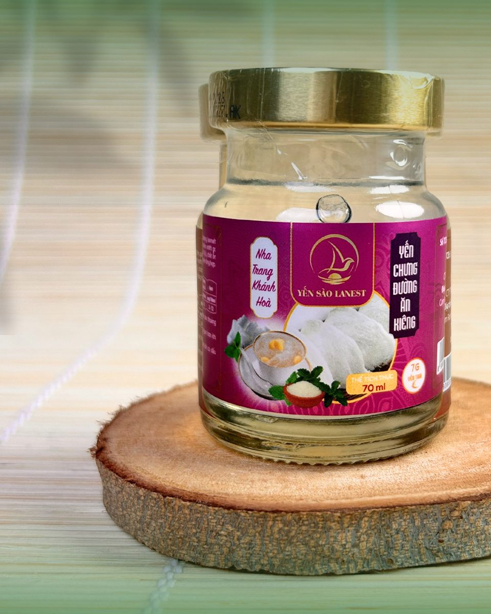
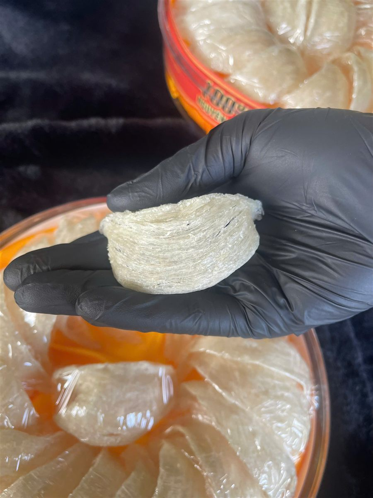

Yến Sào Cho Người Tiểu Đường, Huyết Áp Cao: Dùng Sao Cho An Toàn
Yến Sào Lanest · Đăng ngày 13/10/2026

Mua yến cho bố mẹ, không ít anh chị sẽ khựng lại ở một câu: "Ba bị tiểu đường, mẹ huyết áp cao, có ăn yến được không?". Bài này không hứa hẹn yến chữa được bệnh gì, vì yến sào là thực phẩm bồi bổ, không phải thuốc. Điều bài muốn giúp là chỉ ra chỗ cần để ý nhất khi dùng yến sào cho người tiểu đường: phần đường đi kèm trong chén yến, cách chọn vị yến hũ và cách tự chưng không đường ở nhà.
Yến chưng đường ăn kiêng: dùng đường isomalt thay cho đường phèn
1. Việc đầu tiên: hỏi bác sĩ đang điều trị
Người đang điều trị tiểu đường, huyết áp hay bất kỳ bệnh nền nào cũng nên hỏi ý kiến bác sĩ điều trị trước khi đưa yến vào thực đơn thường xuyên. Bác sĩ là người biết rõ đường huyết, thuốc men và chế độ ăn của từng người, nên chỉ bác sĩ mới trả lời được "ăn bao nhiêu là vừa".
Ba điều Lanest muốn nói thẳng:
- Yến không thay thế thuốc. Không bỏ thuốc, không giảm liều vì đang ăn yến.
- Lanest không khẳng định yến giúp hạ đường huyết hay hạ huyết áp. Lanest không có tài liệu nào chứng minh điều đó, nên không viết.
- Với người huyết áp cao, Lanest chưa có dữ liệu riêng để tư vấn. Lời khuyên duy nhất ở đây là mang nhãn sản phẩm đến hỏi bác sĩ.
2. Đường nằm ở đâu trong chén yến?
Bản thân yến tinh chế là tổ yến đã làm sạch. Với Yến Sào Tinh Chế Lanest, thành phần công bố chỉ có một dòng: 100% tổ yến. Vị ngọt của chén yến đến từ đường phèn nêm thêm, và đường phèn cũng là đường.
- Yến tự chưng: công thức yến chưng táo đỏ trên web Lanest dùng 1–2 muỗng đường phèn cho 5g yến, và ghi rõ người tiểu đường có thể giảm hoặc không cho đường phèn.
- Yến hũ 7g vị đường phèn: nhãn ghi 8g đường phèn mỗi hũ.
- Yến hũ nguyên chất 100%: vị đường phèn ghi đường phèn (8%); vị đông trùng hạ thảo và vị gừng cũng có đường phèn trong thành phần.
Các vị khác của dòng 7g như hạt sen, táo đỏ, đông trùng hạ thảo cũng chưng cùng đường phèn. Bảng dưới lấy từ phiếu kiểm nghiệm dinh dưỡng trong hồ sơ công bố sản phẩm 2025 của Lanest, tính trên 100g:
| Vị yến hũ 7g | Đường tổng | Carbohydrate | Năng lượng |
| Đường phèn | 8,24g | 14,4g | 60 kcal |
| Hạt sen | 10,5g | 12,5g | 52,3 kcal |
| Đông trùng hạ thảo | 11,0g | 11,7g | 47,9 kcal |
| Táo đỏ | 11,7g | 13,6g | 56,2 kcal |
| Đường ăn kiêng | Không phát hiện | 8,48g | 35,1 kcal |
| Đông trùng hạ thảo đường ăn kiêng | Không phát hiện | 9,23g | 38,5 kcal |
3. Hai vị "ăn kiêng" khác gì, và cần hiểu đúng ra sao
Trong 14 vị yến hũ 7g, Lanest có hai vị dành cho người muốn hạn chế đường: Yến chưng đường ăn kiêng và Yến chưng đông trùng hạ thảo đường ăn kiêng. Cả hai không dùng đường phèn mà dùng 2,4g đường isomalt mỗi hũ. Theo phiếu kiểm nghiệm, chỉ tiêu đường tổng của cả hai đều không phát hiện, và đây là hai vị có năng lượng thấp nhất trong các vị dòng 7g đã kiểm nghiệm.
Nhưng anh chị nhìn lại bảng trên sẽ thấy: carbohydrate vẫn có, khoảng 8,5–9,2g trên 100g. "Ăn kiêng" nghĩa là hạn chế đường, không có nghĩa là ăn bao nhiêu cũng được. Thêm hai lưu ý:
- Dòng 7g ngoài yến còn có collagen thủy phân, chất xơ inulin, chất điều chỉnh độ acid, chất ổn định và hương yến tổng hợp. Thành phần đầy đủ in trên nhãn, anh chị nên chụp lại nhãn để hỏi bác sĩ.
4. Tự chưng yến không đường ở nhà
Cách chủ động nhất là mua yến tinh chế về tự chưng, vì lúc đó anh chị tự quyết có cho đường hay không. Các bước theo hướng dẫn chưng yến của Lanest:
- Ngâm yến bằng nước lạnh đến khi nở mềm. Không ngâm nước ấm hay nước nóng, không ngâm quá lâu kẻo yến bở.
- Cho yến vào thố sứ hoặc hũ thủy tinh, có thể thêm vài lát gừng để khử tanh (tùy thích).
- Chưng cách thủy lửa nhỏ khoảng 20–30 phút, nước vừa ngập yến, đậy kín nắp.
- Không nêm đường vào nồi chung. Hướng dẫn của Lanest có cách nấu riêng nước đường rồi rót vào sau khi yến chín. Nhà có người tiểu đường thì chưng chung một nồi, múc phần của người bệnh ra trước, phần còn lại ai thích ngọt thì rót nước đường sau.

Tổ yến tinh chế đã làm sạch: khi tự chưng, lượng đường hoàn toàn do mình quyết định
Muốn thêm nguyên liệu khác như táo đỏ, long nhãn, hạt sen thì nên hỏi bác sĩ hoặc người tư vấn dinh dưỡng trước. Chi tiết từng bước có trong bài hướng dẫn chưng yến đúng cách, còn cách cất yến đã chưng có trong bài cách bảo quản tổ yến.
5. Dùng bao nhiêu, lúc nào?
Các hướng dẫn trên web Lanest đưa ra vài mức khác nhau cho người lớn: 5–10g mỗi lần, 2–3 lần hoặc 3–5 lần mỗi tuần; người lớn tuổi khoảng 3 lần/tuần. Với người có bệnh nền, Lanest khuyên bắt đầu ở mức thấp nhất: khoảng 5g yến khô mỗi lần, 2–3 lần mỗi tuần, rồi để bác sĩ quyết định có tăng hay không.
- Không ăn yến ngay sau bữa ăn chính.
- Dùng đều đặn thay vì ăn dồn dập rồi bỏ ngang.
- Chưng cách thủy nhẹ nhàng, tránh đun sôi trực tiếp.
6. Mua yến biếu người thân đang có bệnh nền
Nếu anh chị mua yến biếu bố mẹ, ông bà đang điều trị tiểu đường hay huyết áp, có thể chọn theo thứ tự ưu tiên sau:
- Yến tinh chế (hộp 50g hoặc 100g): người nhà tự chưng, tự quyết lượng đường.
- Yến hũ vị đường ăn kiêng hoặc đông trùng hạ thảo đường ăn kiêng: tiện, mở nắp dùng ngay, đã hạn chế đường.
- Tránh mua toàn vị có đường phèn cho người đang phải kiêng đường.
Và đừng quên dặn người nhận: hỏi bác sĩ trước khi dùng thường xuyên. Xem thêm bài yến sào cho người cao tuổi để biết cách chọn yến cho ông bà, bố mẹ.
Câu hỏi thường gặp
Người tiểu đường ăn yến được không?
Cần hỏi bác sĩ điều trị trước. Nếu bác sĩ đồng ý, nên chưng yến không đường hoặc chọn vị yến hũ đường ăn kiêng, dùng ít và đều.
Ăn yến có giúp hạ đường huyết, hạ huyết áp không?
Lanest không khẳng định điều này. Yến sào là thực phẩm bồi bổ, không phải thuốc, và không thay thế thuốc điều trị.
Yến chưng đường ăn kiêng có uống thoải mái được không?
Không. Đường tổng không phát hiện nhưng vẫn có carbohydrate và năng lượng. Người có bệnh nền nên dùng theo lượng bác sĩ cho phép.